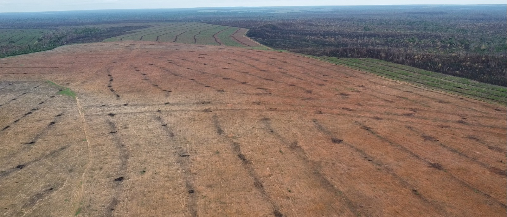
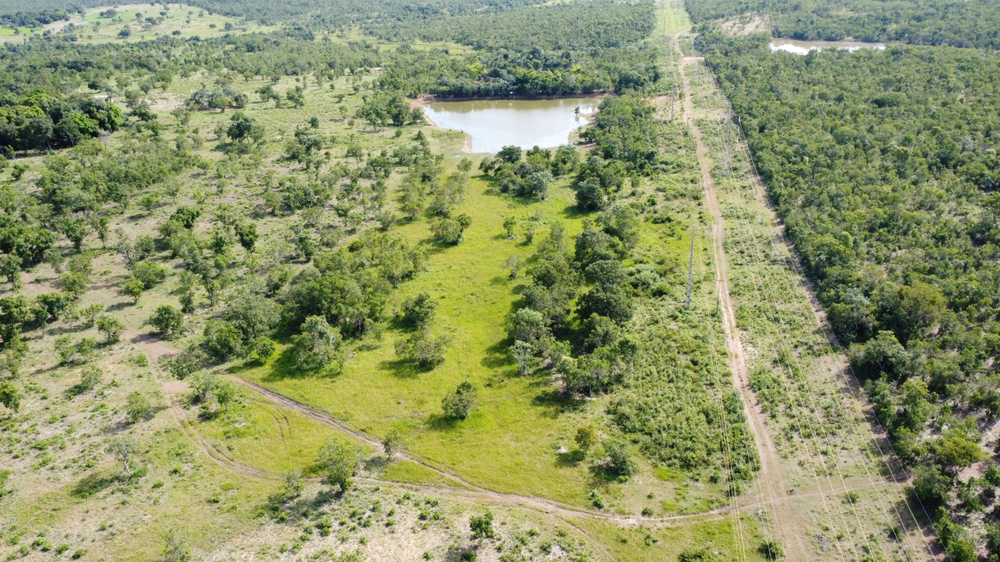
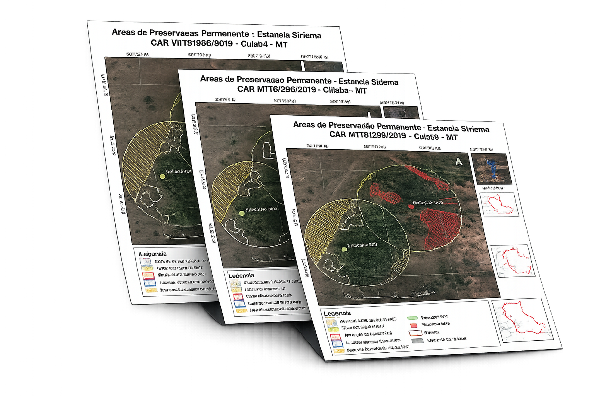
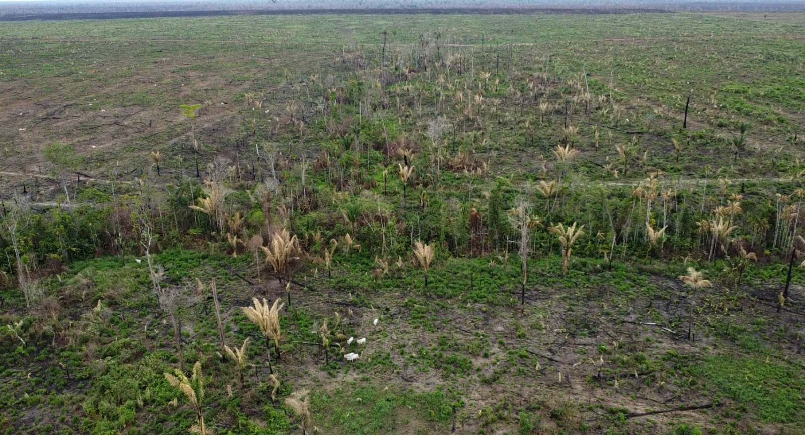
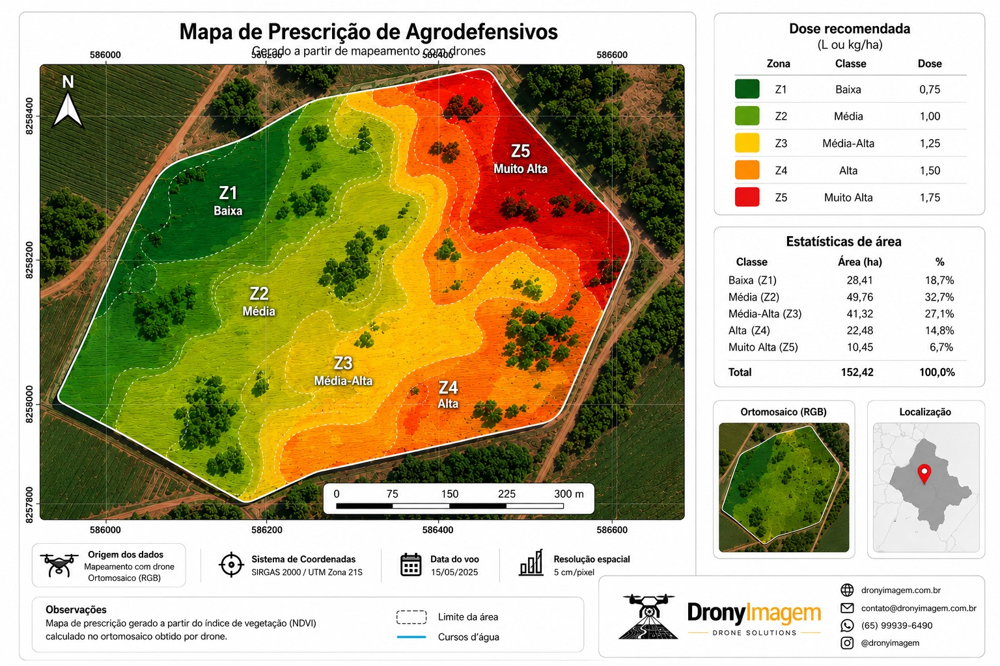
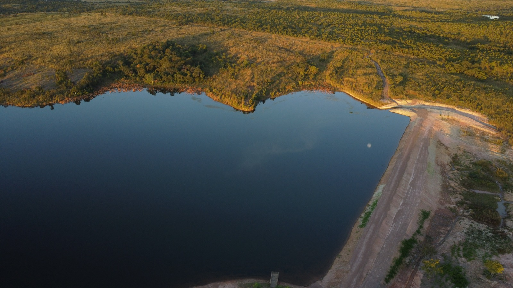
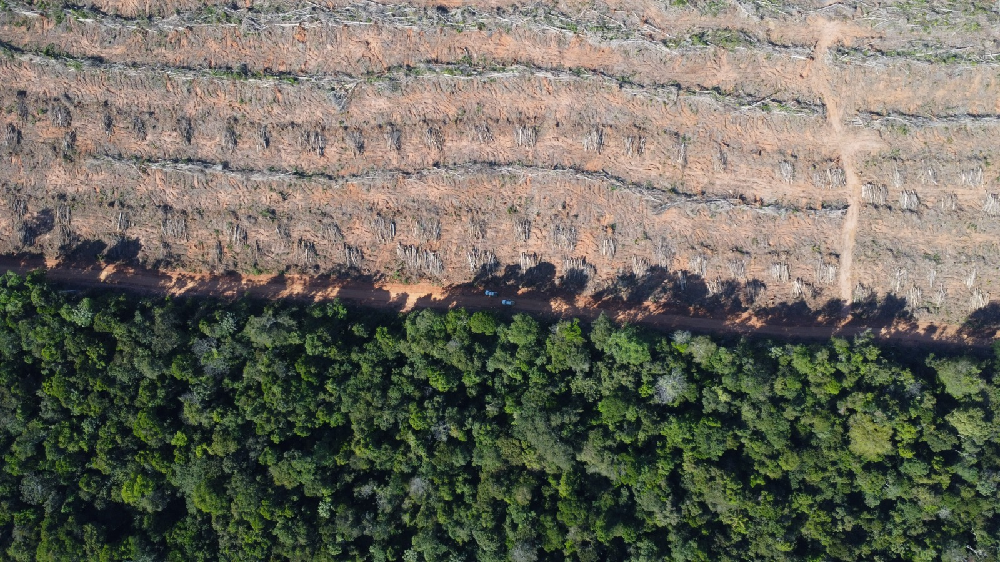
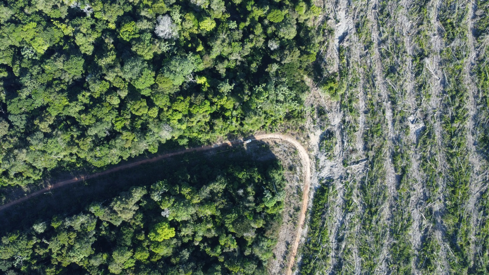

As áreas passíveis de recuperação necessitam de um mapeamento com alta resolução espacial, aumentando a precisão e diminuindo os erros residuais calculados por imagens de satélite.

Os Projetos de Recuperação de Áreas Degradadas exigem relatórios periódicos da evolução dos resultados a partir do replantio e condução de espécies remanescentes, o que pode ser melhor apresentado a partir de ortomosaicos a partir de ortofotos capturadas por nossos drones.


Mapeamento com plataformas com sensores multiespectrais permitem a constatação de elementos que indicam a utilização de desfolhamento químico em locais proibidos indicando produto e concentração.

Os nossos drones com sensores multiespectrais obtém múltiplas fotos de um mesmo ponto geográfico permitindo a análise de Índices Vegetativos e a prescrição de concentrações variadas de aplicação de agrodefensivos de modo econômico e sustentável.

A utilização de drones de alta resolução e acurácia posicional permitem a geolocalização exata das feições de cursos hídricos e lâmina d'água de represas e reservatórios naturais permitindo o cálculo justo e exato da faixa de APP a ser preservada bem como a delimitação de Áreas de Reserva Legal.

Através da utilização de drones com sistema de posicionamento RTK/PPK é possível obtenção de imagens para:


Cada demanda merece o mesmo rigor técnico comparado com grandes operações tecnológicas. É exatamente a nossa missão entregando produtos de alta creditação técnica.
Identificação de áreas passíveis de recuperação com alta resolução espacial para laudos e relatórios técnicos.
Mapas e ortomosaicos para apresentação dos resultados de recuperação de áreas degradadas.
Sensores multiespectrais para identificação de produto e concentração de defensivos em locais proibidos.
Aplicação variável de agrodefensivos baseada em índices vegetativos — economia e sustentabilidade.
Delimitação precisa de Área de Preservação Permanente e Reserva Legal com geolocalização exata.
Modelagem digital de terreno e superfície via RTK/PPK para licenciamento ambiental.
Preencha o formulário com arquivos nas extensões .kml ou .shp referente à área a ser mapeada e, informe dados como nome e telefone que entraremos em contato o mais breve possível.
Após o alinhamento prévio por ligação e definição do orçamento, nosso Time se desloca até a área para voo de reconhecimento e planejamento de trabalho e posteriormente o início do mapeamento.
Processamos as imagens mapeadas e elaboramos os ortomosaicos e mapas demandados para cada caso.
Após a conclusão e conferência do Laudo Técnico submetemos aos Órgãos ambientais ou entregamos em uma reunião de apresentação aos nossos clientes.
Atendemos ao resultado esperado fornecendo suporte técnico e desenvolvemos melhorias para análises temporais futuras de nossos clientes.

Fale com nosso Time DronyImagem e obtenha uma proposta detalhada que atenda à sua demanda descobrindo como a tecnologia com drones podem acelerar o desenvolvimento do seu projeto.
Falar no WhatsAppFale com nosso time, receba uma proposta personalizada e descubra como o drone pode acelerar o seu processo ambiental.